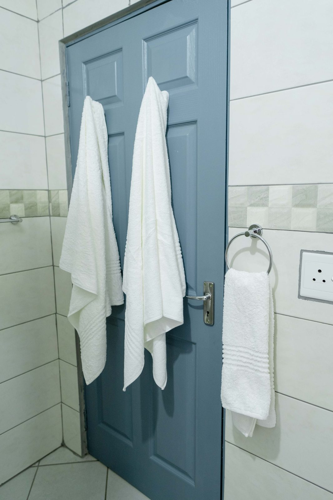
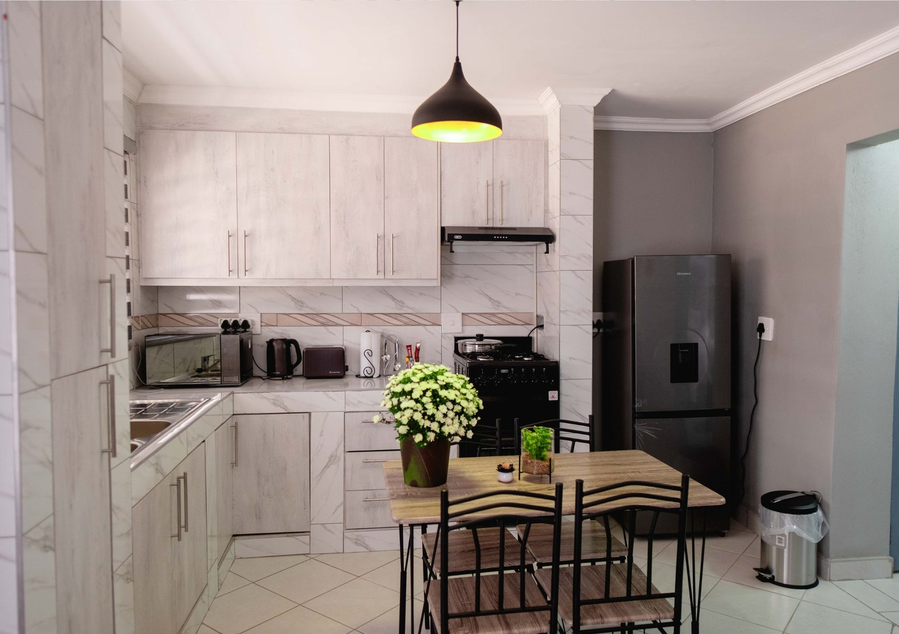
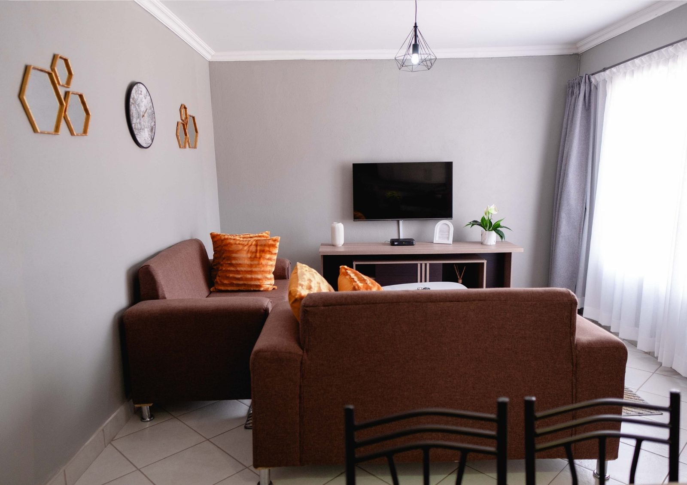
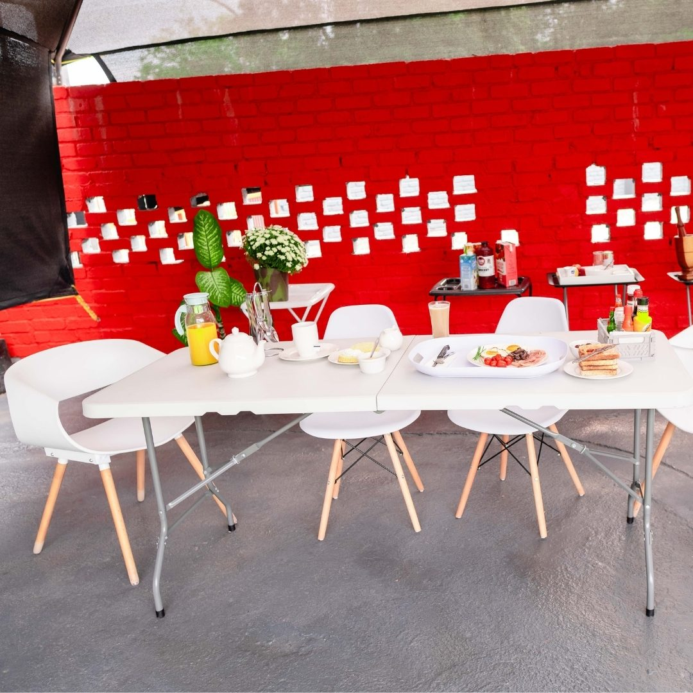
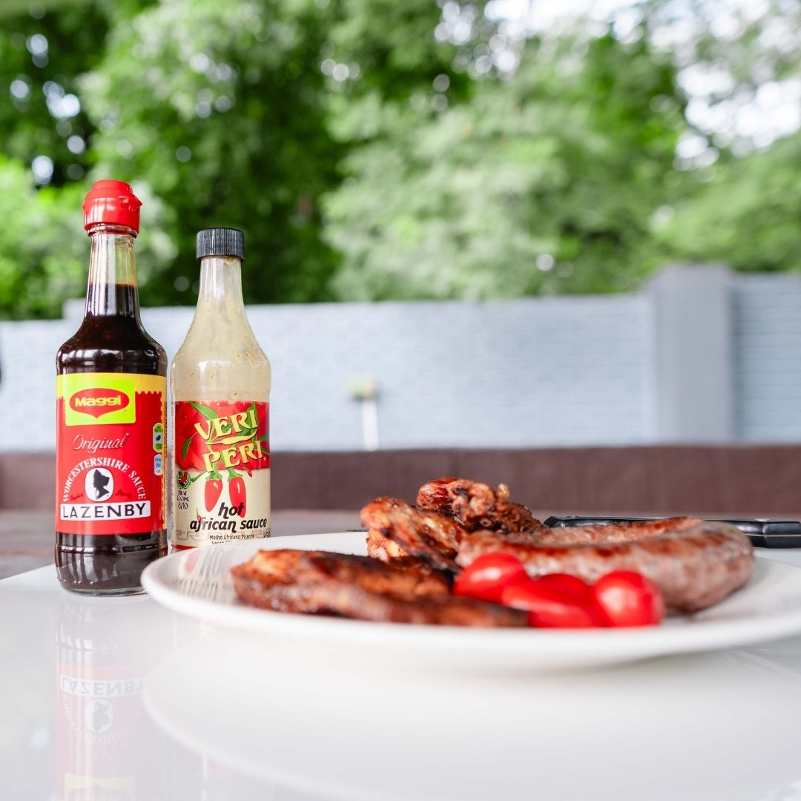

Safari & Local Attractions
Into the wild
Kruger's wild heart is minutes from your door. Whether you have one day or one week, let us put you on the trail of the Big Five — with guides who know every waterhole and every golden hour.
Kedibone Safari
We'll take you there
We've partnered with Kedibone Safari, local specialists who turn a safari into a story you'll tell for years.
- Daily Kruger Safaris — a full day in the wild from Phalaborwa Gate; dawn drives, Big Five sightings, and a picnic where the bush does the talking
- Private Overnight Kruger Tours — an exclusive, intimate multi-day safari — private vehicle, private guide, your own pace
- Wildlife Photographic Safaris — get the shot: expert positioning, patient waiting, and the light only the bush knows
- Photographic & Lightroom Training — learn to edit like a pro — hands-on Lightroom guidance from photographers who live this craft



Local attractions
More to explore
When the dust settles, cruise the Olifants River past hippos and herons, trace the town's mining story, or chase two of South Africa's icons.
Boat safaris & river sights
Scenic boat safaris on the Olifants River — hippos, crocodiles, and a dazzling array of birdlife at eye level.
Museums & heritage
The Foskor Mine Museum tells Phalaborwa's mining story, and Masorini Archaeological Site (inside the Kruger) holds the BaPhalaborwa people's Iron Age smelting remnants.
Day trips from the gate
Blyde River Canyon — one of the world's largest canyons, with trails and boat trips — and the warm oak-and-cream of an Amarula Lapa tasting.
Short films
See it in motion
Press play — the bush starts moving, and so does the plan for your trip.

